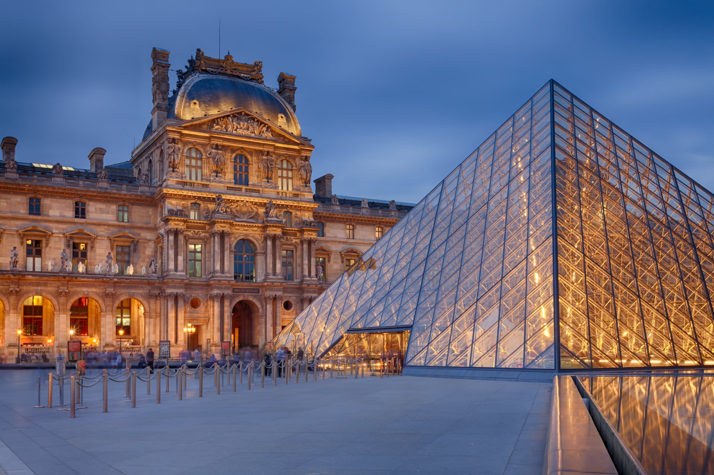

Mission Statement
MonoMuse is a contemporary museum dedicated to exploring the intersection of art, technology, and human creativity.
Milestones
- 2020: MonoMuse opens its doors to the public with its inaugural exhibition, "Digital Dreams."
- 2021: The museum hosts its first virtual reality art exhibition, attracting over 50,000 visitors online.
- 2022: MonoMuse collaborates with local schools to launch an educational program focused on STEAM (Science, Technology, Engineering, Art, and Math).
- 2023: The museum expands its physical space to include a new wing dedicated to interactive installations and digital art.